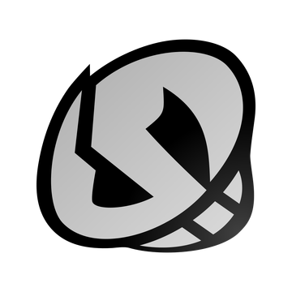

Equipes vilãs são antagonistas nos jogos de Pokémon para desafiar o jogador ou atrapalhar ele durante seu objetivo, geralmente utilizando métodos criminosos. Veja a seguir quais são estas equipes e suas inspirações:
KANTO (Pokémon Red/Blue/Green/Yellow, Pokémon FireRed/LeafGreen ou Pokémon Let's Go: Pikachu/Eevee):
A Equipe Rocket (Team Rocket) é a organização que domina a região de Kanto, fazendo roubos, sequestros, exploração e assassinatos de Pokémon visando o lucro.
Seu líder é Giovanni, o chefe da máfia local e inspirado em chefes da máfia italiana no mundo real.
As aparições de capangas da organização criminosa estão sempre ligadas a roubar Pokémon ou suas partes (como fósseis ou ossos de Pokémon) para vender em seguida, sendo sempre impedidos pelo protagonista. Além disso, essa máfia também já esteve envolvida em sequestro de pessoas para seu interesse próprio.
Esta equipe possui um cassino em Celadon, utilizado-o de faixada para esconder sua base principal de crimes, fazendo paralelo com a máfia da Yakusa, que está diretamente conectada a estabelecimentos e jogos de azar.
Estes criminosos também foram responsáveis pela criação do Mewtwo, um Pokémon lendário criado artificialmente a partir do DNA do Pokémon Mew, com o objetivo de ser o Pokémon mais forte do mundo para que Giovanni dominasse o mundo.
Todos os seus planos dão errado, Mewtwo destrói seu laboratório de criação e suas tentativas de roubo e sequestro também são frustradas pelo protagonista Red.
HOENN (Pokémon Ruby/Sapphire/Emerald ou Pokémon Omega Ruby/Alpha Sapphire):
A Equipe Magma (Team Magma) possui o objetivo de acordar o lendário Pokémon Groudon para evaporar a água da região de Hoenn e cobri-lá com terra.
Liderados por Maxie, a equipe acredita que irá transformar o mundo em um lugar melhor de se viver ao expandir a quantidade de terra no planeta, e para isso seus capangas roubam o Red Orb para despertar Groudon em Ruby/Sapphire/Emeral ou Primal Groudon em Omega Ruby/Alpha Sapphire.
Baseada no pós-guerra da Segunda Guerra Mundial do mundo real, em Kyushu no Japão, esta equipe representa governo japonês da época querendo adicionar mais terras aráveis devido a escassez de alimentos, entrando em conflito com pescadores locais.
Após despertar o lendário Groudon, a Equipe Magma percebe o erro cometido e faz as pazes com a Equipe Aqua, enquanto o lendário Rayquaza desperta para acabar com a briga dos dois lendários Groudon e Kyogre.
A Equipe Água (Equipe Aqua), em contra partida da Equipe Magma, possui o objetivo de acordar o lendário Pokémon Kyogre para inundar a região de Hoenn.
Liderados por Archie, a equipe acredita que irá transformar o mundo em um lugar melhor para os Pokémon viverem ao expandir a quantidade de água no planeta, e para isso seus capangas roubam o Blue Orb para despertar Kyogre em Ruby/Sapphire/Emeral ou Primal Kyogre em Omega Ruby/Alpha Sapphire.
Baseada também no pós-guerra da Segunda Guerra Mundial no mundo real, em Kyushu no Japão, esta equipe representa os pescadores que necessitavam da vida marinha da área para ter um trabalho, entrando em conflito com o governo japonês da época.
Após despertar o lendário Kyogre, a Equipe Magma percebe o erro cometido e faz as pazes com a Equipe Magma, enquanto o lendário Rayquaza desperta para acabar com a briga dos dois lendários Groudon e Kyogre.
SINNOH (Pokémon Diamond/Pearl/Platinum ou Pokémon Brillant Diamond/Shining Pearl):
A Equipe Galáctica (Team Galactic) é uma equipe que possui o objetivo de recriar o universo a imagem de Cyrus, seu líder, utilizando os lendários do tempo e espaço, Dialga e Palkia respectivamente.
Esta equipe costuma roubar Pokémon e itens, além de pesquisas para realizar um bombardeio em um lago e sequestrar os lendários Pokémon Uxie, Mesprit e Azelf, assim criando a partir destes Pokémon as Correntes Vermelhas que podem controlar Dialga e Palkia.
Seus planos chegam perto de dar certo, porém são frustrados por Uxie, Mesprit e Azel, libertados pelo jogador, em Pokémon Diamond/Pearl, ou por Giratina em Pokémon Platinum.
É contado que nem todos os subordinados de Cyrus sabiam de seu objetivo final, achando que apenas roubavam por lucro.
UNOVA (Pokémon Black/White ou Black/White 2):
A Equipe Plasma (Team Plasma), liderada por Ghetsis e seu filho N, possui o objetivo de fazer a humanidade parar de utilizar Pokémon convencendo as pessoas de que elas fazem mal aos Pokémon ou então roubando delas.
Esta equipe é responsável pela criação do mítico Genesect, um fóssil ressucitado e aprimorado para ser o Pokémon mais forte, porém o projeto é interrompido por N, alegando que isso acabaria com a pureza do Pokémon.
Seu líder Ghetsis possui o objetivo pessoal de dominar Unova, criando N para ser o seu progenitor que vai convencer as pessoas a seguirem a Team Plasma e deixarem seus Pokémon livres. Seus planos falham
quando, após derrotar N na Elite dos Quatro e despertar Reshiram ou Zekrom, seu pai conta os verdadeiros planos e agir de forma violenta contra N, confessando que pretendo usa-lo para ser o rei da Equipe Plasma.
Após dois anos, em Pokémon Black/White 2, Ghetsis decide tentar tomar Unova novamente, mas desta vez, despertando o lendário Pokémon Kyurem e fundindo ele com Reshiram ou Zekrom para congelar toda a região. A Equipe Plasma se divide
em duas, a que pertence leal a Ghetsis e o ajuda a dominar Unova, e a que pertence leal a N, se arrependendo de seus atos no passado e ajudando pessoas e Pokémon. Os planos de Ghetsis são fracassados por N e o jogador, que dissolvem a Equipe Plasma de vez.
Esta equipe possui inspirações e paralelos com a igreja católica no mundo real, desde sua história até seu brasão e objetivo.
A Equipe Chamas (Team Flare), liderada por Lysandre, possui o objetivo de tornar o mundo "melhor e mais bonito", através da pratica de roubos para alcançar seu objetivo. Após conseguir a sétima insignea, Lysandre começa uma transmissão nos Holo Casters da população, revelando que seu plano
é reativar a Arma Suprema e matar todos aqueles que não se encaixam nos padrões da Team Flare, utilizando o lendário Xerneas ou Yveltal para reativar a arma. Seus planos falham após Lysandre ser derrotado pelo jogador e libertar Xerneas ou Yveltal, o jogador e seus amigos
tentam convencer Lysandre que um mundo melhor e mais belo se alcança com a cooperação de todos, porém Lysandre não acredita e tenta disparar a Arma Suprema com o pouco de energia que resta nela, a depender da versão, para dar imortalidade ou destruir todos, porém
a arma explode e Lysandre acaba enterrado em seu próprio QG.
Esta equipe possui inspirações e paralelos com o partido Nazista do mundo real, tanto em seu objetivo de acabar com todos que não fossem iguais ao que eles acham bonito, quanto em seus ideais vendidos aos cidadãos de que o mundo seria melhor e mais bonito sem essas pessoas, além do fim
do vilão onde ele mesmo retira a própria vida como ato final.
ALOLA (Pokémon Sun/Moon ou Pokémon Ultra Sun/Moon):

A Equipe Caveira (Team Skull), é formada por jovens arruaceiros que não passaram nos testes de suas ilhas em Alola, sendo rejeitados socialmente pelo seu fracasso, porém ao contrário
de outras equipes vilãs, eles não representam um grande perigo, pois apenas roubam Pokémon para venderem e se sustentarem em sua cidade Po, na ilha de Ula'ula, que foi invadida e tomada por eles. Esta equipe é liderada por
Plumeria, vista pelos membros como uma irmã mais nova, Guzma, o líder e sendo influenciados secretamente por Lusamine, já que Guzma a respeita por ser a única a reconhecer sua força. Os membros desta equipe possuem um laço de irmandade, mesmo não sendo parentes, assim sendo muito unidos, por este motivo Gladion, filho de Lusamine e um personagem importante no decorrer da história, tenta fazer parte desta organização, mas é rejeitado por não ser próximo a ninguém da equipe.
A equipe eventualmente se dissolve após os eventos em Ultra Sun/Moon.
A Fundação Éter (Aether Foundation) tem como principal objetivo proteger e pesquisar Pokémon feridos, incluindo Pokémon de outras dimenções (Ultra-Bestas). A fundação não apresenta nenhum plano
maléfico ou danoso, com muitos funcionários realmente ajudando Pokémon os resgatando da Equipe Caveira por exemplo, o problema está em seus líderes. Lusamine, a presidente da organização, desenvolve uma obceção pelas Ultra-Bestas pois seu marido, Mohn, acaba sumindo durante uma investigação dos Ultra-Buracos de Minhoca.
Desde então, Lusamine continua abrindo os Ultra-Buracos de Minhoca e utilizando da toxína da Ultra-Besta Nihilego como uma forma de lidar com o luto, semelhante a vicíos em bebidas alcoolicas ou drogas utilizadas no mundo real. Após sua derrota em uma batalha onde Nihilego se junta a Lusamine, ela aos poucos retorna a sanidade e ao seu objetivo de protejer os Pokémon, principalmente ao ver seu marido sumido retornar ao mundo de onde veio, porém sem memórias.
Por outro lado Faba, o braço direito de Lusamine, possui o objetivo pessoal de subir de cargo em sua carreira, sempre mudando de lado em brigas e lutando com quem for preciso para que seus planos funcionem, chegando até mesmo a trair a Fundação Éter ao se juntar com a Equipe Rainbow Rocket e se aliar a Giovanni. Após sua derrota e outros acontecimentos, Faba se redime dizendo querer melhorar como pessoa, mas quando Lusamine descobre seus feitos, o rebaixa a estagiário da Fundação Éter.
Esta fundação também possuia o objetivo de parar a invasão de Ultra-Bestas (Ultra-Beasts) com um projeto chamado Matador de Bestas (Beast Killer), criando artificialmente o mítico Pokémon Sylvally, com a modificação genética envolvendo os 18 (dezoito) tipos de Pokémon existentes. O projeto foi criado sob a supervisão de Lusamine, e após vários fracassos, Faba criou uma máscara criogenica para conter Sylvally, assim o transformando em Tipo: Nulo (Type: Null). Porém, Tipo: Nulo é roubado por Gladion, filho de Lusamine, e evoluí para Sylvally após obter pontos de amizade o bastante com seu treinador.
A Equipe Rocket Arco-íris (Team Rainbow Rocket) é controlada por Giovanni, porém um de outro universo onde seus planos deram certo, e possui o objetivo de dominar as Ultra-Bestas para governar o Multiverso. Giovanni se alia a outros chefes de equipes vilãs, cada um vindo de um universo onde seus planos deram certo e seu Pokémon lendário utilizado foi capturado, e também aliando-se a Faba para
invadir a Fundação Éter em troca de aumentarem seu cargo profissional. O jogador derrota todos os chefes de equipes vilãs do passado até chegar em Giovanni, que uma vez derrotado deixa esta realidade para continuar seus planos em outra dimenção. A aparição desta equipe só ocorre durante o episódio Rainbow Rocket no pós-jogo de Pokémon Ultra Sun/Moon.
GALAR (Pokémon Sword/Shield):

A Equipe Macro Cosmos (Team Macro Cosmos) é uma empresa com diversas filiais e funcionários, sendo liderada por Rose, o presidente da empresa. Esta organização domina a região de Galar, tanto com filiais em empregos comuns, como ajudando a
organizar a Liga Pokémon e ajudando treinadores a se tornarem mestres Pokémon, e também utiliza da energia Dynamax para suas próprias empresas e para seus planos de dominação mundial. Rose, com medo desta energia acabar em 1.000 (mil) anos,
tem o plano de reacordar Eternatus, Pokémon lendário responsável por criar a energia Dynamax, causando o segundo Dia Mais Escuro (The Darkest Day) assim gerando mais energia Dynamax. Porém Rose percebe que Eternatus, além de ser extremamente forte, era incontrolável, assim necessitando da ajuda de Leon, o campeão da Liga Pokémon de Galar, mas Leon não pôde derrotar
o lendário Pokémon, precisando que o jogador, junto de Hop, irmão mais novo de Leon, Zacian e Zamazenta, Pokémon lendários que já pararam o Dia mais Escuro a 3.000 (três mil) anos atrás, para dar um fim a esta história. Três dias após o ocorrido, Rose se entrega as autoridades e Leon assume o cargo de presidente da Equipe Macro Cosmos.
A Equipe Grito (Team Yell) é liderada por Piers, líder de ginásio de Spikemuth, e formada por fãs de Marnie, irmã mais nova de Piers e concorrente ao título de campeã de Galar, com o objetivo de atrapalhar outros treinadores a chegarem na Copa dos Campeões para que
Marnie ganhe e traga mais visibilidade para sua cidade abandonada. Os fãs de Marnie atrapalham outros treinadores sem o conhecimento dela, impedindo pessoas de passarem por lugares ou até mesmo tentando roubar uma bicicleta de um senhor, e quando Marnie descobre o que estão fazendo, ela os repreende.
Esta equipe possui o único objetivo de chamar atenção, pois sua cidade não possui visitantes a muito tempo e também não tem um Ponto de Energia, principal atração dos ginásios responsável por transformar os Pokémon em Dynamax/Gigantamax, assim ficando abandonada. Marnie não vence a Copa dos Campeões,
então ela e seus fãs passam a dar apoio para o jogador, ajudando ele a chegar na final da Copa, e após o fim do evento, Piers renuncia seu cargo de Líder de Ginásio.
PALDEA (Pokémon Scarlet/Violet):
A Equipe Estrela (Team Star) é formada por vítimas de bullying que combateram os valentões, com cinco chefes de esquadrão e uma líder de nome Cassiopeia, que ao final do jogo revela ser Penny. A equipe não causa problemas e o jogador deve enfrentar seus chefes para que eles voltem a escola e terminem
seus estudos, pois estão sob ameaça de expulsão por evasão escolar. Após todos os eventos do jogo, os membros da Equipe Estrela voltam a ser alunos comuns e dissolvem a equipe.